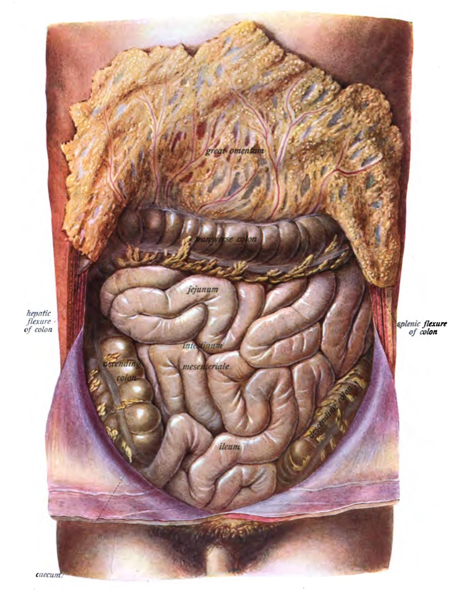
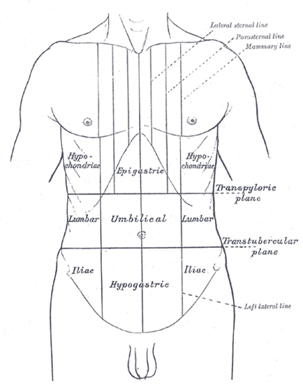
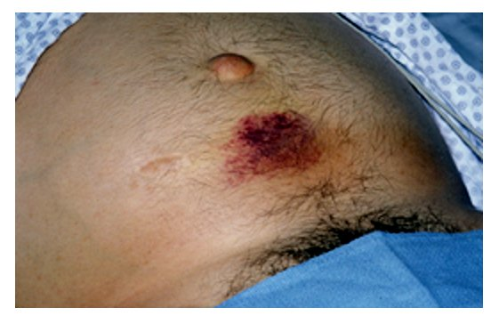

בדיקת בטן
אנמנזה ובדיקה גופנית של מטופל עם כאב בטן חריף: מה שואלים, איך בודקים ומה מחפשים
בסוף הסדנה תדעו
- להסביר את ההבדל בין כאב ויסצרלי לכאב פריאטלי ולמה כאב יכול להיות מוקרן
- לקחת אנמנזה ממוקדת של כאב בטן חריף, כולל רקע, תרופות ושאלות גינקולוגיות
- לבצע בדיקת בטן מסודרת: הסתכלות, הקשה, מישוש ובדיקת המפשעה
- לזהות סימני צפקת ו"כאב שאינו תואם לבדיקה"
- להכיר את הסימנים הקלאסיים (מרפי, רובסינג, פסואס ועוד) ואת המגבלות שלהם
- לדעת אילו בדיקות מעבדה לשלוח אחרי הבדיקה
למה הכאב נראה כך?
- צפק ויסצרלי: עוטף את האיברים, עצבוב אוטונומי. כאב עמום, לא ממוקם, "התכווצויות"
- צפק פריאטלי: מצפה את דופן הבטן, עצבוב סומטי לפי הדרמטומים. כאב חד וממוקם היטב
- הדוגמה הקלאסית: בדלקת התוספתן הכאב מתחיל עמום סביב הטבור ועובר לרבע הימני התחתון כשהצפק הפריאטלי נפגע
- כאב מוקרן: אוויר חופשי שמגרה את הסרעפת יכול לגרום לכאב בכתף. ולהפך: אוטם בשריר הלב יכול להופיע ככאב בבטן העליונה
- "חריף": בדרך כלל כאב שהתחיל לפני פחות משבוע (גבול שרירותי)

תשעת אזורי הבטן

👆 לחצו על אזור בציור כדי לקרוא עליו (ימין המטופל בצד שמאל של הציור)
כבד, כיס מרה, כפיפת הכבד של המעי הגס. כאן בודקים את סימן מרפי: עצירת הנשימה בשאיפה מרמזת על כיס מרה חריף
קיבה, תריסריון, לבלב. כיב מנוקב ודלקת לבלב. זכרו את הלב: אוטם בשריר הלב יכול להופיע ככאב בבטן העליונה
טחול, כפיפת הטחול של המעי הגס. עמימות בהקשה משמאל למעלה עם עמימות משתנה בצד ימין: קרע או המטומה של הטחול (סימן Balance)
המעי הגס העולה, הכליה. אבנים, פיאלונפריטיס. שטף דם במותן (Grey Turner): דימום רטרופריטונאלי או דלקת לבלב קשה
המעי הדק והמעי הגס הרוחבי. כאב ויסצרלי עמום, למשל בתחילת דלקת התוספתן. חסימה, איסכמיה של המעי. שטף דם סביב הטבור (Cullen): דימום תוך-בטני
המעי הגס היורד, הכליה. אבנים, פיאלונפריטיס, שטף דם במותן כמו בצד ימין
צקום, תוספתן, שחלה ימנית. דלקת תוספתן (רובסינג, פסואס). תסביב שחלה, היריון מחוץ לרחם. כאן גם המפשעה: בקע
שלפוחית, רחם, חלק מהסיגמואיד. דלקת אגן, היריון מחוץ לרחם, מורסה באגן ותוספתן אגני (סימן האובטורטור). בדיקה רקטלית ואגנית לפי החשד
המעי הגס הסיגמואידי, שחלה שמאלית. דלקת סעיפים, תסביב (וולוולוס) של הסיגמואיד, סיבות גינקולוגיות. המפשעה השמאלית
הסיפור קודם לכל בדיקה
הכאב
- מתי התחיל ואיך (פתאומי או הדרגתי)
- אופי, מיקום, איכות ומשך. האם נדד או מוקרן (כתף, גב)
- כאב מחוץ לבטן: לא לשכוח לשאול
תסמינים נלווים
- בחילות, הקאות, שלשול, היעדר יציאות וגזים
- חום, צמרמורות, מגע עם חולים
הרקע
- גיל ומין: מחלת סעיפים, דרכי מרה וכיב פפטי שכיחים במבוגרים ולא בצעירים
- מחלות רקע: מעשן עם מחלת כלי דם? לחשוב על מפרצת וחסימה של כלי דם המעי
- ניתוחים קודמים: הדבקויות, בקע בחתך. מיד אחרי ניתוח: דליפה מהחיבור
- תרופות: סטרואידים ומדכאי חיסון מטשטשים כאב וחום. הפסקת נוגדי קרישה בפרפור פרוזדורים: תסחיף
- נשים: וסת אחרונה, הריונות, מחלות מין, אמצעי מניעה, אנדומטריוזיס
- אלרגיות, עישון, אלכוהול וסמים
לפני שנוגעים בבטן
- הציוד: סטטוסקופ, כפפות וחומר סיכה (לבדיקה רקטלית), סדין לכיסוי. בבדיקה אינטימית: מלווה בחדר
- הסבר והסכמה: מציגים את עצמכם ומסבירים מה תעשו
- המבט הכללי: דופק מהיר, הזעה וחיוורון הם סימני רעילות מערכתית
- הנשימה: מאמץ נשימתי בלי צפצופים או חרחורים יכול להיות פיצוי על חמצת מאלח בבטן
- תנוחה: שכיבה על הגב, הברכיים כפופות וכפות הרגליים על המיטה. כך שרירי הבטן רפויים
- בדיקה מלאה: גם לב וריאות. קולות לב עמומים וכאב באפיגסטריום? לחשוב על לב

סדר הבדיקה
צפקת וסימני אזהרה
סימני הצפקת הקלאסיים
- עמידה לא רצונית (guarding): קשה להבדיל ממתיחה רצונית של השרירים. כפיפת הברכיים עוזרת
- נוקשות של דופן הבטן
- רגישות בהרפיה (rebound): הכאב מחמיר כשמשחררים את הלחץ. מעיד על גירוי הצפק הפריאטלי
- רוב המטופלים עם בטן חריפה יראו לפחות חלק מהסימנים האלה
- כאב שמתמקד: מי שמתלונן על כאב בכל הבטן מצביע לפעמים על נקודה אחת בבדיקה זהירה. המיקום מצמצם את האבחנה המבדלת

מרפי, רובסינג ושות׳
מעבדה ואוכלוסיות מיוחדות
כמעט לכולם
- ספירת דם: לויקוציטים גבוהים או נמוכים, "סטייה שמאלה". המוגלובין נמוך: דימום. גבוה: התייבשות
- כימיה ולקטט: חמצת או לקטט גבוה: התייבשות, אלח מתפתח או איסכמיה. גזים בדם כשיש חמצת לקטית
לפי החשד
- תפקודי כבד, עמילאז וליפאז · בדיקת שתן
- β-HCG לכל אישה בגיל הפוריות
- לפני ניתוח: סוג והצלבה, תפקודי קרישה
טעויות נפוצות ורשימת בדיקה
טעויות נפוצות
- בדיקה בלי לבדוק את המפשעה
- להתחיל למשש בדיוק במקום הכואב
- לסמוך על קולות מעיים כדי לשלול חסימה
- לשכוח β-HCG באישה צעירה
- לפספס סיבה מחוץ לבטן: לב, ריאות
- להירגע מבטן "רכה" אצל מבוגר או מטופל על סטרואידים
רשימת בדיקה
- ☐ הצגה עצמית, הסבר, פרטיות
- ☐ סימנים חיוניים ומבט כללי
- ☐ תנוחה: ברכיים כפופות, בטן חשופה מהפטמות עד המפשעה
- ☐ הסתכלות: תפיחות, צלקות, שטפי דם, בקעים
- ☐ הקשה, אחר כך מישוש: שטחי ועמוק
- ☐ נקודת רגישות מרבית, עמידה, רגישות בהרפיה
- ☐ מפשעות משני הצדדים
- ☐ רקטלית / גניטלית לפי הצורך
- ☐ לב וריאות
- ☐ סיכום: ממצאים ואבחנה מבדלת
מחקרים שכדאי להכיר
הסיפור הקלאסי (כאב סביב הטבור שנודד לימין למטה, חוסר תיאבון או בחילה וחום קל) מוביל לאבחנה הנכונה בכ-90% מהמטופלים. כ-96.5–100 מקרים ל-100,000 מבוגרים בשנה
Moris D, Paulson EK, Pappas TN. JAMA 2021;326(22):2299-31116 מחקרים ו-6,004 מטופלים. 14 סימנים ותסמינים שינו את הסבירות. הרושם הכולל של הרופא היה הטוב ביותר לאישור (למשל חסימה: LR+ 24.6). רגישות בהרפיה ועמידה לבדן לא עמדו בסף
Tans A et al. BJGP Open 2024;8(3):BJGPO.2023.0245251 מבוגרים עם כאב בטן חריף במיון. אולטרסאונד שגרתי לא שיפר את דיוק האבחנה הראשונית (56% לעומת 62%) ולא קיצר את השהות. ההדמיה לא מחליפה את הבדיקה
Brau F et al. Scand J Trauma Resusc Emerg Med 2024;32:15חמישה דברים לקחת למחלקה
- כאב עמום ולא ממוקם הוא ויסצרלי. כאב חד וממוקם הוא פריאטלי. המעבר ביניהם מספר סיפור
- אנמנזה מלאה: גיל, מין, ניתוחים, תרופות ושאלות גינקולוגיות
- בודקים בשכיבה עם ברכיים כפופות: הסתכלות, הקשה, מישוש. תמיד גם המפשעה
- כאב קשה עם בטן רכה: לחשוב על איסכמיה
- ספירה, כימיה ולקטט כמעט לכולם. β-HCG לכל אישה בגיל הפוריות